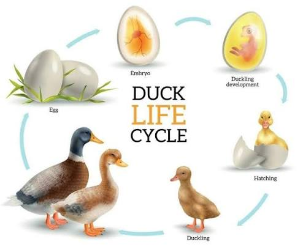

Ducks go through several stages as they grow.

Ducklings change quickly as they grow feathers and learn how to survive. The table below shows the main stages of a duck's life.
| Life Stage | Approximate Age | Development and Actions |
|---|---|---|
| Egg | Days 1–28 | The duck grows inside the egg. |
| Hatching | Around day 28 | The duckling breaks out of the egg. |
| Young Duckling | 1–3 weeks | The duckling begins walking and swimming. |
| Growing Duckling | 3–7 weeks | The duckling grows and develops feathers. |
| Juvenile Duck | 7–16 weeks | The duck becomes more independent. |
| Adult Duck | 4–6 months | The duck finds food on its own. |
Each stage helps the duck prepare for adult life. As ducks grow, they become stronger and more independent.